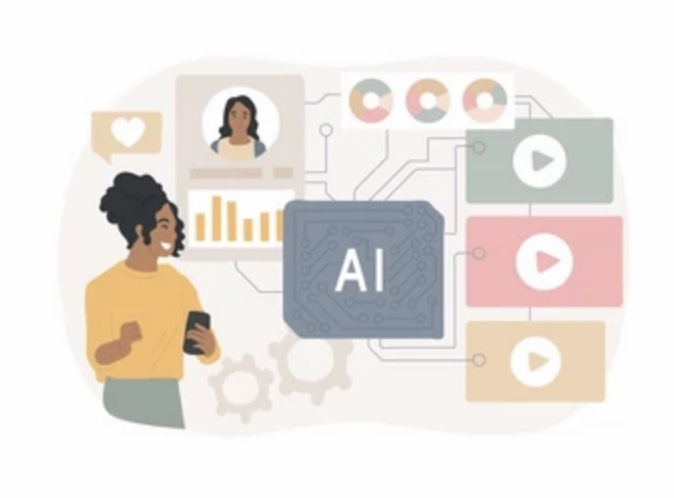
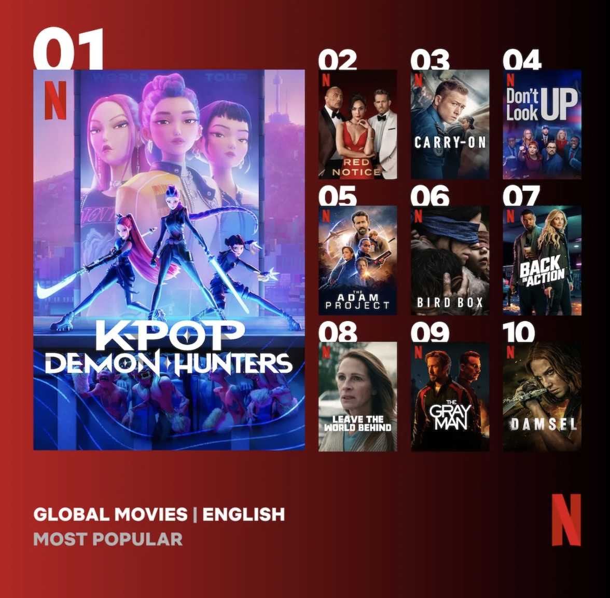
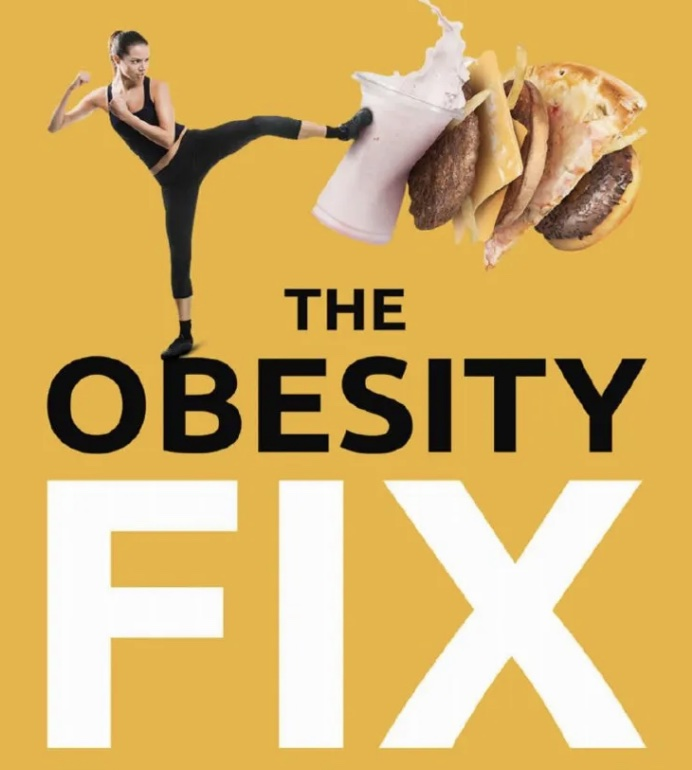
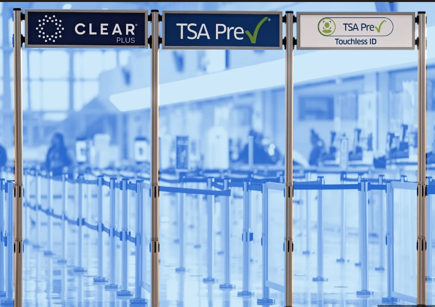

Building reliable data platforms, and using data to answer business questions.
I am a Lead Data Engineer with more than 15 years of experience designing and delivering data pipelines, warehouses, and cloud platforms. I now work in financial services on payment and risk data, and I am completing a Master's in Data Science at Bellevue University.
This portfolio collects my applied data science projects: recommendation systems, exploratory analysis, predictive modeling, and policy analysis. Each project links to a GitHub folder with a README that explains the question, the data, and the status.

Status: In progress
Combines demographic, content, and collaborative signals to recommend tracks. The analysis uses 89,740 tracks and ten acoustic features such as valence, energy, and danceability.
View Project
Status: Draft
An exploratory analysis of Netflix's catalog of movies and TV shows, covering content type, ratings, genres, and release timing.
View ProjectStatus: TBD
Uses 2019 American Time Use Survey data to find underserved groups and score non-skill behaviors for labor matching, using correlation and clustering.
View Project
Status: TBD
A machine learning model that classifies people into seven weight categories from daily habits such as water intake and physical activity, comparing several algorithms.
View ProjectStatus: Draft
Converts monthly child care costs into a 6-month mean and compares it across states and age groups, to show where affordability is weakest.
View ProjectStatus: In progress
A recipe recommender that filters for dietary needs, allergy restrictions, and food preferences, with healthier alternatives based on nutrition goals.
View Project
Status: In progress
Analyzes airport operations data to find pain points and produce summary visuals for TSA leadership, aimed at Precheck enrollment and traveler experience.
View ProjectStatus: In progress
Uses a full MLB season of data to see how weather, day of week, and promotions affect stadium attendance.
View ProjectStatus: Not started
Reserved for a project from the applied data science course.
Status: Not started
Reserved for a project from the applied data science course.
Lead data analysis, mapping, transformation, and loading of fraud and risk payment data into the enterprise data warehouse for reporting and analytics.
Work with business partners to turn requirements into functional and technical designs, and with developers, data modelers, and DBAs through implementation.
Build and maintain Ab Initio graphs and Teradata SQL rules, and support production incidents and business requests.
Built DevOps tooling and automation for merchandising applications, including continuous integration and delivery pipelines with Bamboo, JIRA, and Stash.
Migrated source code from CVS to Git, and created deployment plans and change workflows across application teams.
Trained application and IT teams on DevOps practices and maintained team documentation.
Gathered business and technical requirements, and worked through design, development, testing, and deployment of web and batch applications.
Tuned complex SQL to speed up batch processing, and built reporting tools in Spring MVC.